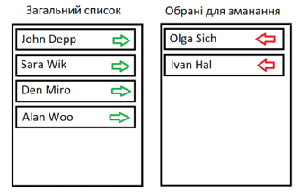

Задача 1. Відображаємо картки товарів, які користувач може вибирати. Вибраний товар має зелену рамку
Задача 2. Дано список спортсменів. Потрібно сформувати список тих, які будуть брати участь у змаганні. При цьому є два стовпці. В одному відображені всі спортсмени, в іншому – список тих, хто був вибраний. При натисканні на зелену стрілку спортсмен переміщається у список для змагань. При натисканні на червону стрілку спортсмен переміщається у загальний список.
Задача 3. Відобразити падаючий сніг. Сніжинка з’являється у верхній частині екрану і з випадковою швидкістю рухається вниз. Як тільки сніжинка досягає нижньої частини екрану вона знову повинна з’явитись у верхній частині екрану.
Задача 4. Сяючі зорі. Вказана кількість зірочок повинна з’являтися у випадковій частині екрану. Кожна зірка з певним кроком і інтервалом збільшується від мінімального до максимального розміру. Як тільки досягнути максимального розміру зірочка повинна з’являтися у іншій випадковій позиції.
Задача 5. Байрактар. З верхньої частини екрану у випадковій позиції по горизонталі з’являються танки, які їдуть вниз. При кліку на танк він вибухає і зникає з екрану.